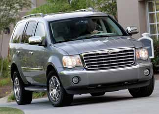

CHRYSLER
Don't blink: This is the here-today, gone-tomorrow 2009 Chrysler Aspen Hybrid SUV, which is rated for 20 mpg in the city, 22 mpg on the highway (the best fuel economy for that size of SUV). Chrysler will cease production of the hybrid and conventional Aspen and Dodge Durango SUVs at the end of 2008.